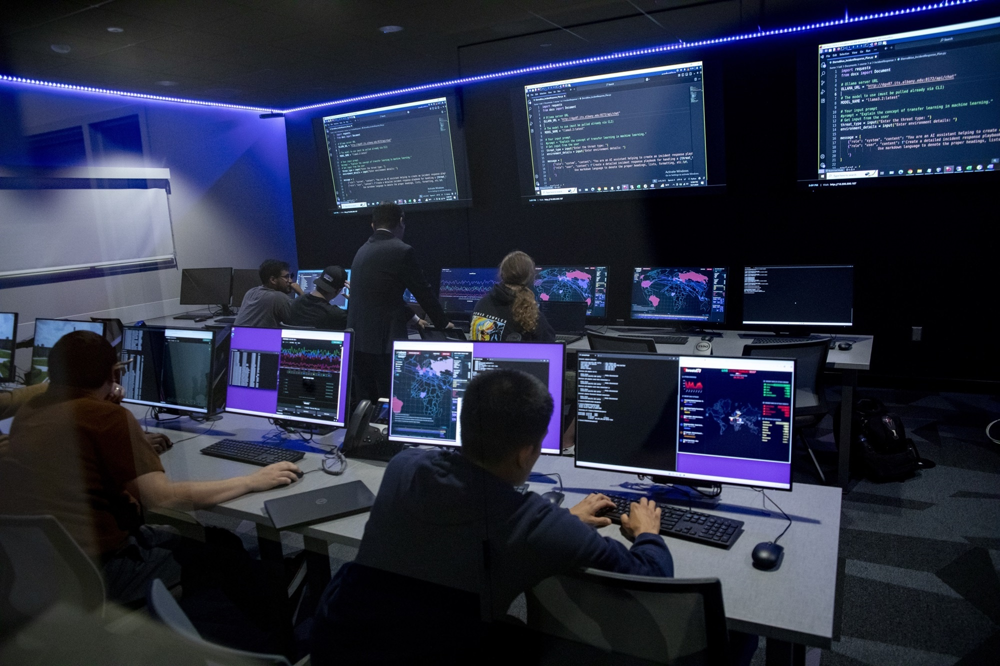

Safe, ethical technology for people with IDD, from birth to death
Mission
The Inclusive Futures Lab studies how assistive and emerging technologies, including artificial intelligence (AI), can safely and ethically support people with intellectual and developmental disabilities (IDD) and the people who support them.
We develop technology training, cybersecurity awareness, and accessible technology practices for individuals with IDD, their families, teachers, direct support professionals, clinicians, and service providers.
Our work follows a person across the whole lifespan: early intervention, school years, the transition to adulthood, employment and day services, and aging.

Why it matters
People with IDD, and the staff and families who support them, often have the least access to technology training. They still face real risks, including scams, loss of privacy, and misuse of AI.
We build practical, accessible training so technology can improve independence, communication, and quality of life from birth to death.